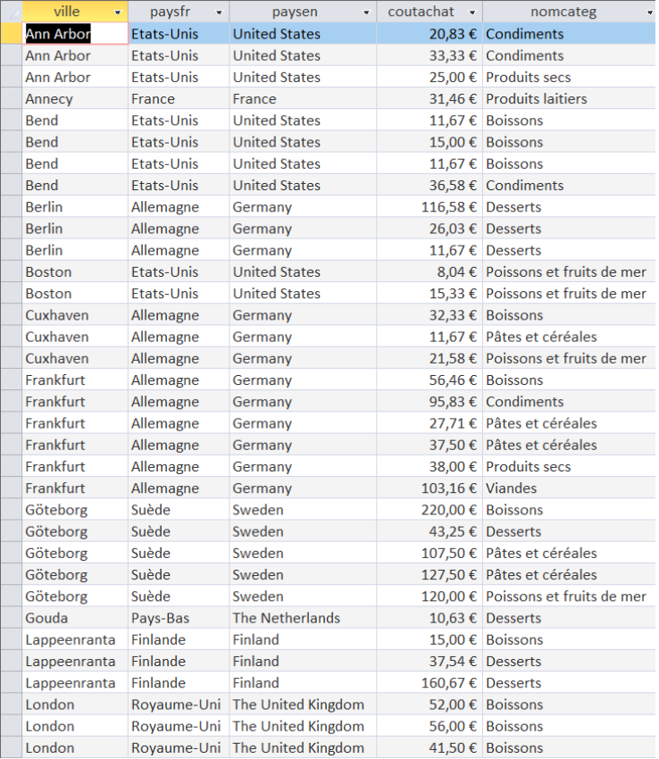

INDICATEUR 03
Permet d'étudier la provenance des produits de KDou, en affichant leur fournisseur, leur coût d'achat et leur catégorie.
SELECT ville, paysfr, paysen, coutachat, nomcateg
FROM (fournisseur AS f INNER JOIN pays AS p ON f.nopays = p.nopays)
INNER JOIN produit AS pr ON pr.nofourn = f.nofourn
INNER JOIN categorie AS c ON pr.codecateg = c.codecateg
ORDER BY ville, paysfr, nomcateg;
